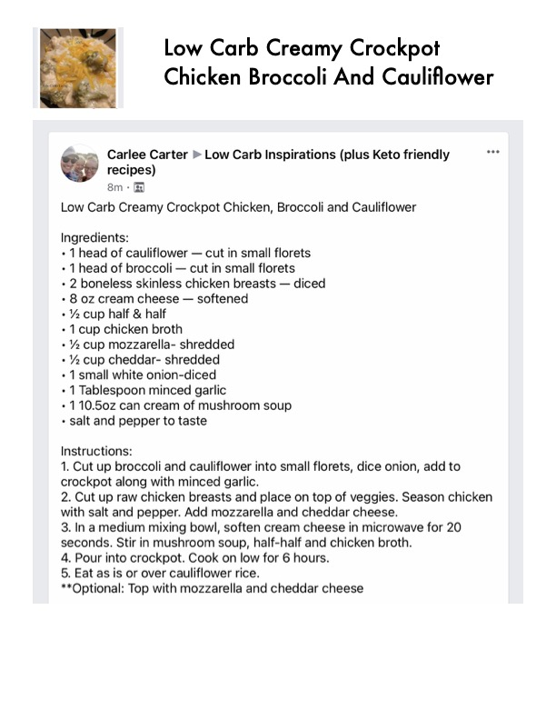

Low Carb Creamy Crockpot

Original cookbook page 130
Ingredients
- * 1 head of cauliflower — cut in small florets
- * 1 head of broccoli — cut in small florets
- + 2 boneless skinless chicken breasts — diced
- * 8 oz cream cheese — softened
- + % cup half & half
- * 1 cup chicken broth
- + % cup mozzarella- shredded
- + % cup cheddar- shredded
- * 1small white onion-diced
- + 1 Tablespoon minced garlic
- + 110.50z can cream of mushroom soup
- + salt and pepper to taste
Instructions
- Cut up broccoli and cauliflower into small florets, dice onic crockpot along with minced garlic.
- Cut up raw chicken breasts and place on top of veggies. ' with salt and pepper. Add mozzarella and cheddar cheese.
- In a medium mixing bowl, soften cream cheese in microw seconds. Stir in mushroom soup, half-half and chicken brott
- Pour into crockpot. Cook on low for 6 hours.
- Eat as is or over cauliflower rice. **Optional: Top with mozzarella and cheddar cheese
Recipe #130 from collection